Deux gîtes dans une grange, au milieu des noyers, face à la Dordogne
Une grange superbement rénovée, posée dans une noyeraie cinquantenaire au-dessus de la Dordogne, entourée de collines boisées. À 5 km d'Argentat, en Corrèze. Piscine chauffée.
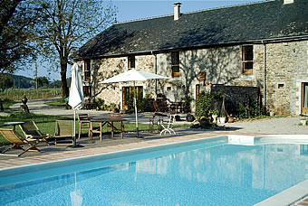
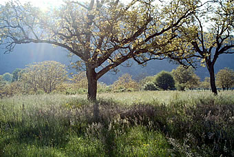
Le lieu
Calme, détente et bien-être, avec la vue sur la rivière
« La Grange aux Noix » vous ouvre ses portes dans un cadre splendide, en plein milieu d'une noyeraie cinquantenaire. Située au bord de la Dordogne, entourée de collines boisées et verdoyantes, elle offre une belle vue panoramique depuis chaque fenêtre et chaque porte.
Chaque pièce est spacieuse et lumineuse. Les murs épais en pierre et le double vitrage gardent la fraîcheur pendant les mois chauds de l'été ; l'hiver, le plancher chauffant au rez-de-chaussée et le poêle à bois du salon créent une ambiance douillette.
La grange se trouve à 5 minutes en voiture d'Argentat, petite ville vivante avec ses restaurants, son marché, ses foires et ses animations de saison. La Dordogne est accessible à pied.
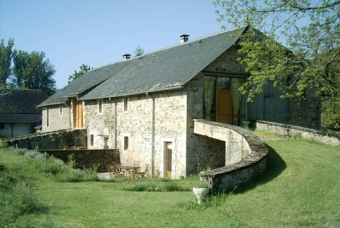
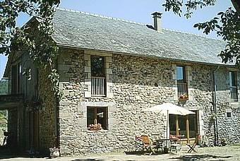
Les gîtes
Chaque gîte accueille jusqu'à 6 personnes
Trois grandes chambres doubles, avec lit double ou lits simples au choix. Lits d'appoint et lits bébé possibles. Le linge est fourni.
Au rez-de-chaussée
- Un salon et une salle à manger spacieux, avec poêle à bois
- Fauteuils, canapé, TV, lecteur DVD et chaîne hi-fi
- Une cuisine entièrement équipée : lave-vaisselle, four, micro-ondes
- Une buanderie avec machine à laver
- Une salle d'eau avec douche à l'italienne, deux lavabos et WC
- Une terrasse exposée à l'est, équipée pour manger dehors
À l'étage
- Trois grandes chambres doubles
- Une grande salle de bain avec baignoire d'angle, douche à l'italienne, deux lavabos et WC
- Radiateurs à l'étage, plancher chauffant en bas
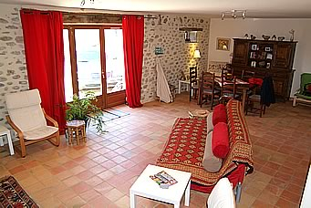
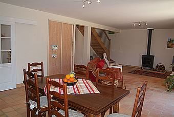
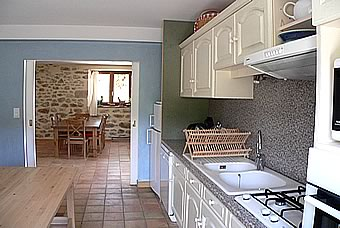
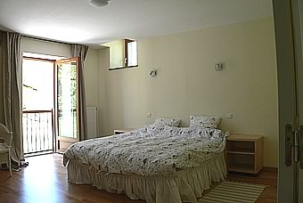
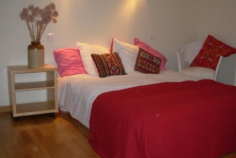
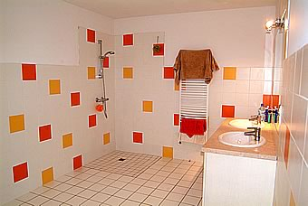
Aménagée pour les personnes à mobilité réduite
- Douche de plain-pied, facile d'accès
- Accès possible en voiture jusqu'à l'étage
- Des pièces très spacieuses pour faciliter les déplacements
- Poignées de maintien dans les salles de bain
La grange a été aménagée pour accueillir des personnes partiellement handicapées.
Sur place
Si vous préférez ne pas bouger
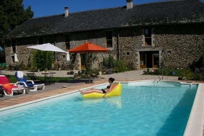
Une grande piscine chauffée
Pour se détendre en profitant tranquillement de la beauté des lieux.
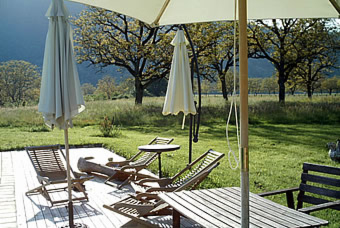
La terrasse et le jardin
Salon de jardin et tout le nécessaire pour manger dehors les beaux jours.
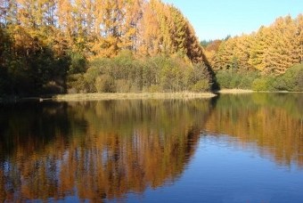
La Dordogne à pied
Un accès facile à la rivière à pied, et un atelier de peinture et de poterie sur place pour laisser s'exprimer votre sens créatif.
Galerie
La grange, les gîtes et la vallée
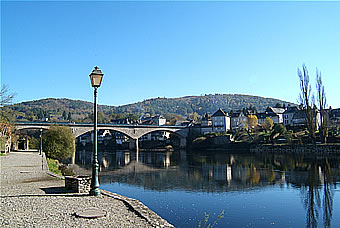
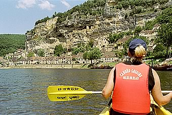
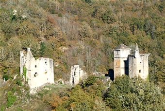
Les alentours
Aux confins du Limousin, de l'Auvergne et du Quercy
Là où la Dordogne sort de ses gorges profondes pour s'installer dans une petite plaine bordée de collines boisées. L'été, Argentat vit au rythme des foires, des concerts et des expositions d'art et de poterie.
Contact et réservation
Tarifs à la semaine, selon la saison et le nombre de personnes
Nous pouvons être flexibles sur les tarifs selon la durée du séjour et le nombre de personnes, et sur les dates : du milieu de semaine au milieu de semaine, ou un week-end prolongé hors haute saison. Contactez-nous pour connaître les disponibilités.
Nous appeler
Venir
Vergnolles
19400 Monceaux-sur-Dordogne
Gares : Brive-la-Gaillarde et Tulle.
Aéroports : Brive-la-Gaillarde, Rodez et Limoges.